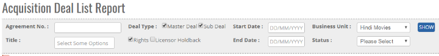


	<section>
		<article>
			<h2>Acquisition Deal List Report<span></span></h2>
			<div>
				<p></p>

				<p>Acquisition Deal List Reports comes under Reports Module. This reports is accessible to those user who has right for this module.</p>

				<p>Acquisition Deal list report, where user can check the status of Single/Multiple Acquisition Deal Record, enlisting details for the same.</p>

				<div class="triangle-border top">				
					
				</div>

				<p>- As shown in the above Image, Select "<b>Acquisition Title</b>" from drop down, user can select Single or Multiple Titles.</p>

				<p>- Reports will come according to "<b>Business Unit</b>".</p>

				<p>- User has option to select on (Deal Type) <b>"Master Deal", "Sub Deals", "Rights", "Reverse Holdback"</b> if user want to check report including All Deal Type then user has to select All Option or any Single Option as per user requirement. <b>(Not mandatory)</b></p>

				<p>- User has Option to select <b>"Start Date"</b> And <b>"End Date"</b> Of Rights period.</p>

				<p>- <b>Status:</b> status by default will be as <b>"Fully Executed"</b></p>

				<p>- <b>Agreement No:</b> Agreement Number is a unique value automatically assigned to each deal. (If user want to search any Acquisition Deal by Agreement number, then enter agreement No in the text box and click on search button, user will get record of particular agreement number deal) </p>

				<p>* If user select master Deal then all master deal record will be displayed.</p>

				<p>* If user select master Deal and sub deal then, both master and sub deal record will be displayed in the Report.</p>                                                                

				<p>* If user select only Rights then Rights of all the titles selected will be displayed in the Report.</p>

				<p>* If user select Reverse Hold-back then all Holdback Record will be displayed along with the Rights.</p>

				<p>* If user select nothing , and click on "<b>Show</b>" Button then all record will be displayed in the report for E.g. ( Master deal ,All sub deal Like Music Deal ,Program deal all record will be come in reports )with all work flow status Like Approved, amended, Decline, waiting For authorization.</p>


				<p>- Click on <b>Show</b> button and the report will be generated. (As shown in above image)</p>

				<p>- User can generate the report in <b>Excel</b> by clicking on Export Button and clicking on Excel in the drop-down.</p>
				
			</div>
		</article>
	</section>